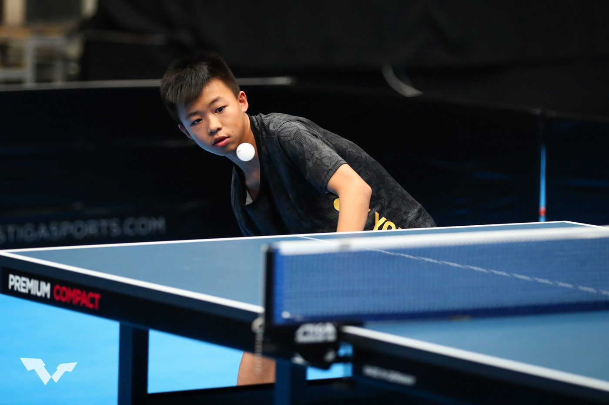
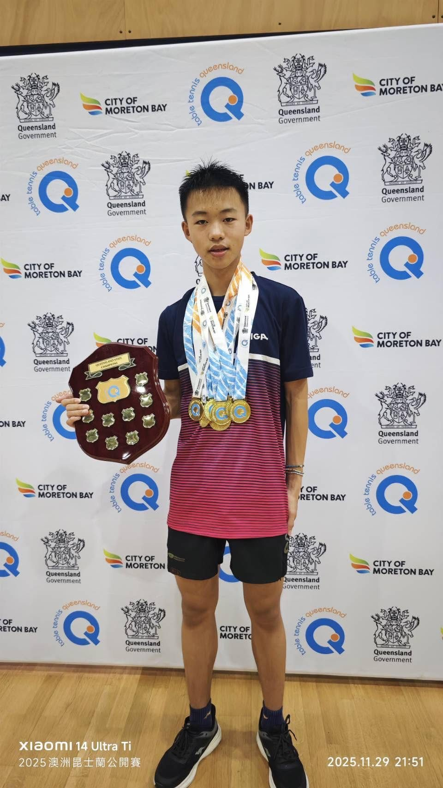

01我的故事
我不是只想贏一場比賽
我是羅允呈。對我來說，桌球不是放學後的興趣，而是我每天願意重新開始的一件事。從基本動作、步伐、多球，到每一顆發球的旋轉與落點，我在一次次重複裡學會：進步沒有捷徑，只有把看似微小的細節做到更穩、更準。
國際比賽讓我看見世界的速度、力量與戰術差異，也讓我明白，冠軍不是終點。每一次贏球，都代表下一個對手會更強；每一次失利，都逼我回到球桌前找出答案。我把比賽中的緊張、判斷失誤與落後局面帶回訓練，練習在九比九、十比十與決勝局裡仍能清楚思考，從被動應對，成長為能主動控制節奏的選手。

